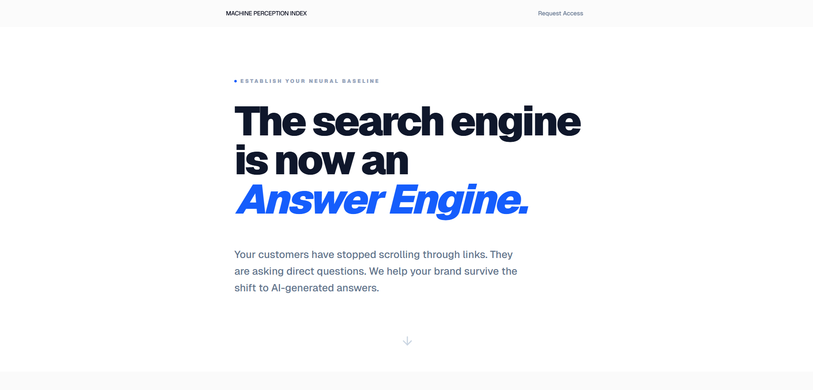

Machine Perception Index
A modular platform for measuring how frontier LLMs perceive and represent entities. Broadcasts questions to 9 models in parallel, scores responses across 10 perception pillars, and generates academic-grade reports. Built to optimize for RAG instead of traditional SEO.
9frontier models in parallel
